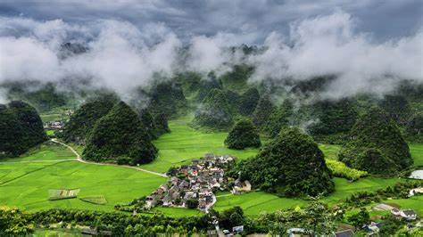
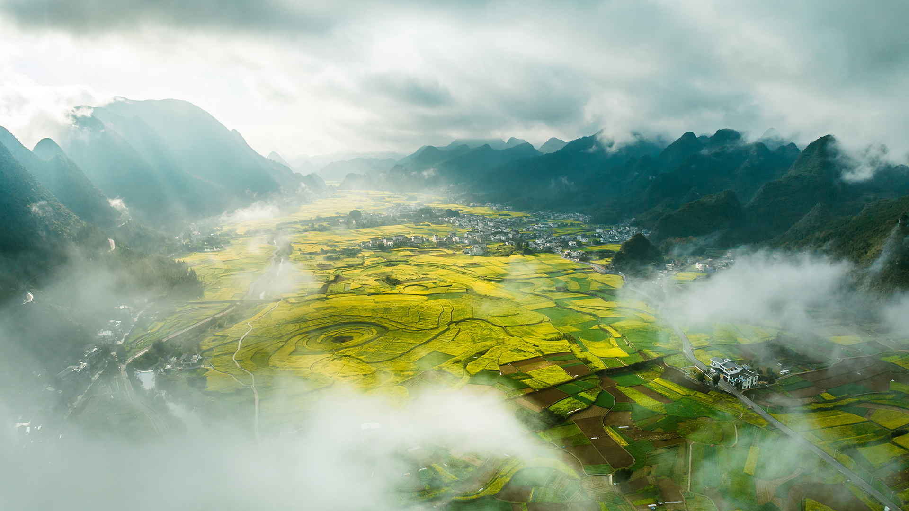
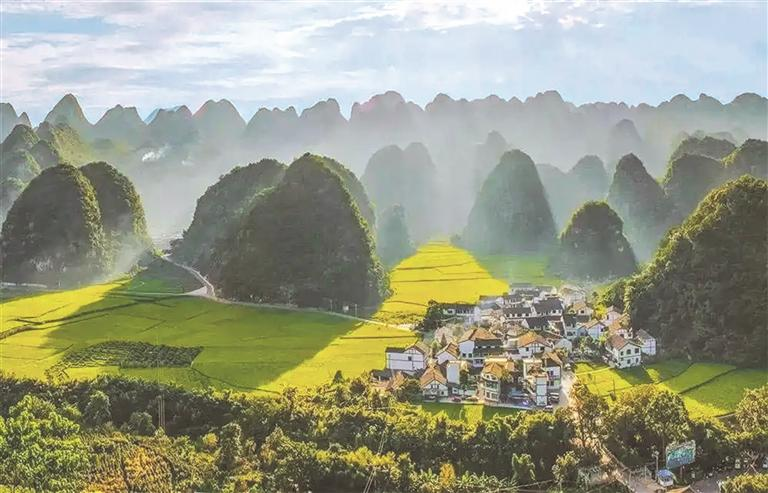
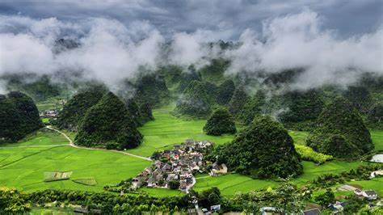
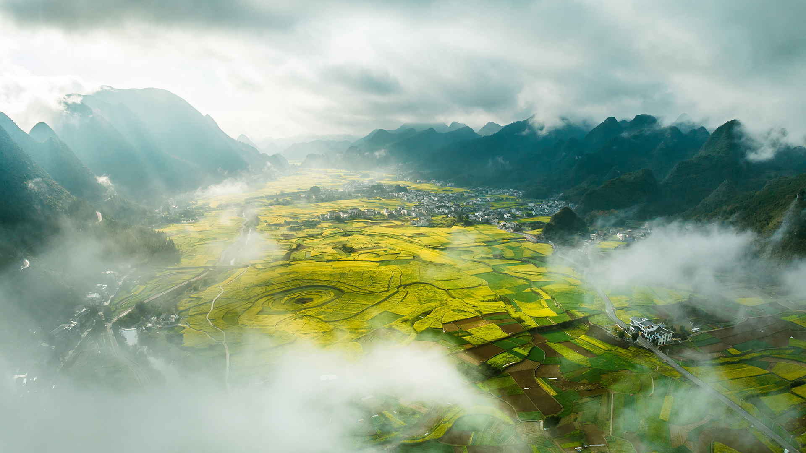
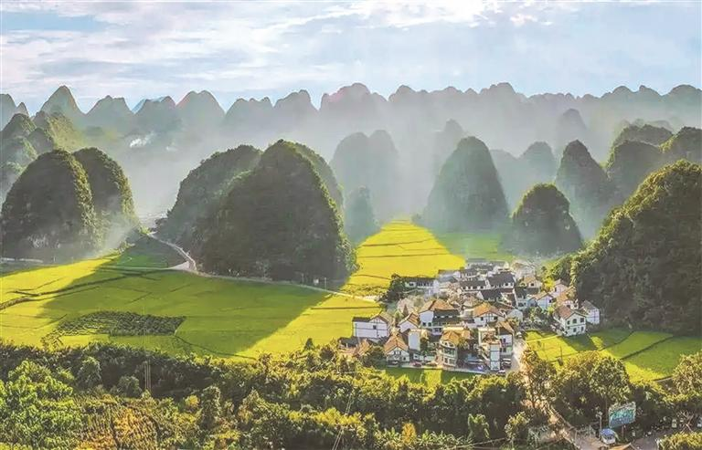

关于万峰林
兴义万峰林，中国锥状喀斯特博物馆，堪称“天下奇观”。成千上万座奇峰异石，构成壮丽的山水画卷。必看：乘坐观光车，俯瞰峰林全貌，欣赏田园风光。
Xingyi Wanfenglin, China's conical karst museum, a "wonder of the world." Thousands of peculiar peaks form a magnificent landscape painting. Must-sees: Take a sightseeing car, overlook the panoramic view of the peaks, enjoy pastoral scenery.
Xingyi Wanfenglin, musée du karst conique de Chine, une « merveille du monde ». Des milliers de pics étranges forment une magnifique peinture paysagère. À voir absolument : Prenez un véhicule touristique, admirez la vue panoramique des pics, profitez du paysage pastoral.
 





主要特色
-
锥状喀斯特地貌：典型的锥状喀斯特地貌，数以万计的奇峰异石拔地而起，构成壮丽的峰林画卷。
Conical Karst Landscape: A typical conical karst landscape where tens of thousands of peculiar peaks rise from the ground, forming a magnificent panorama of peak forests.
Paysage Karstique Conique : Un paysage karstique conique typique où des dizaines de milliers de pics étranges s'élèvent du sol, formant un magnifique panorama de forêts de pics.
-
田园风光：峰林之下是阡陌纵横的田园和古朴的布依族村寨，构成一幅和谐的自然与人文画卷。
Pastoral Scenery: Beneath the peak forests lie crisscrossing fields and quaint Bouyei villages, creating a harmonious picture of nature and culture.
Paysage Pastoral : Sous les forêts de pics se trouvent des champs entrecroisés et de pittoresques villages Bouyei, créant une image harmonieuse de la nature et de la culture.
-
观光体验：可乘坐观光车深入峰林腹地，或选择骑行、徒步等方式，近距离感受峰林的壮美。
Sightseeing Experience: Visitors can take sightseeing buses deep into the heart of the peak forests, or choose cycling or hiking to experience the magnificence of the peaks up close.
Expérience Touristique : Les visiteurs peuvent prendre des bus touristiques au cœur des forêts de pics, ou choisir le vélo ou la randonnée pour découvrir de près la magnificence des pics.
游玩小贴士
最佳观赏时间为清晨和傍晚，光线柔和，景色更佳。景区内有多个观景台。可租用自行车游览。
The best viewing times are early morning and evening when the light is soft, enhancing the scenery. There are multiple viewing platforms in the area. Bicycles are available for rent.
Les meilleurs moments pour observer sont tôt le matin et le soir lorsque la lumière est douce, ce qui améliore le paysage. Il existe plusieurs plateformes d'observation dans la région. Des vélos sont disponibles à la location.